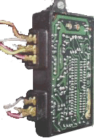
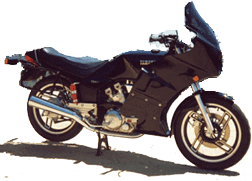
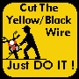

Page is being updated May 2001)
Page is being updated May 2001)
TCI / CDI Electronic Ignition This is a guide about the "YAMAHA VISION" motorcycle ignition system. However, much of this info applies to any ignition system. Specifically, how TCI/CDI works, how to trace Vision ignition problems, and ultimately how you might repair a Vision TCI ignitor module. It is written for "all" so experts have patience.
If you have comments... PLEASE email. I will update this for fellow Vision Owners (Vision Riders Group).
©1999 Dave "Leather" Draper JET_AV8R@CSI.COM

"Yamaha Vision"
Motorcycle
Electronic Ignition
Version 2.0 (May 2001)
Best Viewed @ 600x800

Quick Jump To ..... How Does Electronic Ignition Work?
General Discussion PageHow TCI Works Generally
Jump Into This Page> How To Repair a Vision TCI Ignitor Vision Riders Group
top
1.0=> INTROThe ‘82/`83 VISION has a "Transistor Controlled Ignition" system ("TCI"). This type of ignition is used on many older non-automotive motors (look at a Virago...) and is closely related to modern Capacitive Discharge Ignition ("CDI") systems. While technology advances bring us to the computerized ignition systems of today, the principles of ignition have remained fairly the same.
The 2-cyclinder Vision motorcycle TCI system consists of :
- 2 sensor pickups under the crankshaft cover
- magnet on outside edge of flywheel (triggers sensor pickups)
- 2 spark coils (1 for each cyclinder)
- a solid state module box ("ignitor") that controls the sparkSolid state (electronic) ignitions were introduced in the early 70's (my '72 Outboard has one), became widely used in autos in the mid 80's (my '80 Triumph TR-7 and '80 Porsche 928 did), and is now common on ALL motors. The Vision ignition has the typical problems associated with older (and poorly built newer) solid state systems. The sensors or control module will fail completely ... -OR- ... (more frustratingly) the ignition becomes erratic and usually increasingly worse when hot.
Electronic Ignitions fail usually due to:
- electronic components (switching transistors usually) in the system breaking down with heat
- material defects (bad or broken solder joints)
- corrosion (bad connections)
- normal life span ("MTF" mean time between failure rate) of electronics (diodes, transistors, etc)Lets face it, electronics don't last forever and I'll bet you don't have your first stereo anymore either.
A Vision TCI cost about $500 new and about $150 used. If you have a VISION with ignition problems you know your bike is not worth too much more than that. Still… it's a great ride!! If you want to fix it affordably here's your best chance. Eliminate ignition problems in an organized progression and you will minimize the chance of buying an expensice Ignition module you didn't need..
top
2.0 => TROUBLESHOOTING OVERVIEWtop2.1 [COMMON SENSE APPROACH]
You want to narrow down ALL the possibilities before you replace a TCI, PICKUP, or COIL. If you can get (beg, borrow, steal ..) a good spare TCI then DO IT. Bottom Line... You have 2 coils and 2 pickups. So you can eventually tell if one is BAD by using the other in its place. BUT there is no "SURE" test of the TCI. You can prove it's bad, but you can't prove it's good. Eliminate every other possibility and then you know it's a TCI module.
REMEMBER some common sense stuff dudes (ie. don't blow THESE off):
- Plugs really do foul bad enough not to work (check spark with plug removed)
- Don't confuse ignition symptoms for carb problems (check for spark)
- Bad connections and Fuses can produce all the same symptoms of bad TCI/Pickups
- Is Your Battery Good ????top2.2 [WHAT **ARE** THE SYMPTOMS]
Exactly "WHAT IS GOING ON" ?? Try to pin down your symptoms:
-Is just ONE cylinder misfiring? Pull rear spark plug (easier) and figure that out
-What is the Tach doing during the problem since the TCI drives the tach too
-What conditions make it happen/worse?..after getting hot / been running awhile / etc..top2.3 [Quick Check List In Priority Order]
[ ] a. Fuses
[ ] i. TCI Power On Test
[ ] b. Connections
[ ] j. TCI module Power/Voltage Checks
[ ] c. Voltage Dropouts
[ ] k. TCI disassembly + inspection
[ ] d. Battery
[ ] l. Sensor Ohm Check / Swap Test
[ ] e. Spark Plugs and Wires
[ ] m. Coils Ohm Check / Swap Test
[ ] f. Side Stand Relay
[ ] g. Engine Stop Switch
[ ] h. Rev Limiter Wire
top2.4 ["The Matrix"]
Symptoms
Possible Problem / Solution Front Cyl ONLY misfire / Inop
Sparkplug fouled or Plug Wire bad
Rev Limiter ->
cut Yellow/Black wire at TCI 6-prong plug
Front Pickup -> check / swap
Front coil -> check / swap
TCI -> check / swapRear Cyl ONLY misfire / Inop
Tach Works fineSparkplug fouled or Plug Wire bad
Rear Coil -> check / swap
Grey wire Bad From TCI to coil
{TCI is triggering tach correctly, sensor good}Rear Cyl ONLY misfire/Inop
Tach Jumps around wildly or inopRear Pickup -> check / swap
TCI -> check / swapBOTH cyl die together, bike won't run
Tach dies also (goes zero)Side Stand Relay ->
Cut Black/White wire at TCI 6-prong plug
TCI-> Check/Swap (Try Power On test).BOTH cyl die together
And starter won't workRun switch bad -> Try Separate 12v wire and test
Both cylinders misfire
Engine runs real erratic
May run fine high RPM but not low
(or visa-versa)
May not start or spark at all
Worse when hotMost likely TCI problem or bad connection to TCI
Check connections and voltages
TCI -> power on tests
TCI -> InspectionIgnition good till under load
Bad Battery
Connections - Voltage drop somewhereIgnition good some days not others
Bad Connections
TCI -> Open Inspect for obvious flaws / moisture
top
3.0 => [GENERAL ASSUMPTIONS]-Good Fuses
-Good connections
-Good battery
-Moisture In TCI
-Plugs + Plug wirestop3.1 FUSE BOX
The fuse box under the seat sucks. Regardless of the outcome of your ignition problem, replace this!! AT LEAST REPLACE THE IGNITION FUSE (...you lazy bastard!?!?)One of the fuses is a 10A-ignition fuse. It provides +12v power to the ignition module / coils / safety relays. A bad connection here can result in ALL of the ignition symptoms!!
I'd be amazed if the metal tabs that hold the fuses in haven't snapped off from age fatigue and corrosion. If you have tried removing the fuses and cleaning them this has probably happened.
top3.15 REPLACING FUSE BOX
Replace each fuse with plastic "ATC BLADE" type fuses. Get the good ones with a rubber case and snap on tops. Look in a good marine store ("Boats US") or auto shop ("Pep Boys", etc...). Solder these inline into the wiring harness. Use shrink tubing / electrical tape / or liquid rubber to insulate the connections from ground. The idea here is to prevent ANY corrosion from getting in these connections. IT CAN MAKE A REALLY BIG DIFFERENCE!
top3.16 PROTECTING CONNECTIONS
Another GOOD technique is to use "Dialectic" grease to protect fuses and connector. This is SPECIAL grease that WON'T conduct electricity. Get in good auto parts store. GET THE RIGHT STUFF or you'll have big problems on your hands. Dab the stuff all over connections you want to protect. Used widely in marine applications.
top3.2 CONNECTIONS
Most of the wire connections (especially in the plastic plugs) are "crimped on" connectors. These are especially prone to corrosion or getting "loose". A "BAD" connection is easier to find than a "POOR" connection. Here's why.
A "poor" connection will conduct +12 volts but may cause enough "voltage drop" that the thing its going to-from (TCI / COIL / PICKUPS) is NOT getting what it needs. The TCI is especially sensitive to voltage requirements because it is a "solid-sate" device. A poor ground or poor power source is EQUALLY BAD! See sections on voltage drop and testing.
Now you can check for this (read the the appendix section on multimeter use) BUT to my way of thinking just make all your connections "bulletproof" in the ignition system and then you don't have to worry
top3.25 CLEANING CONNECTIONS
To CLEAN the plug connectors pull them apart, clean them with a small file or knife. Some people like pencil erasers. Emery boards or 400 - 600 grade sandpaper are OK but remember the grit (... or you could make it worse). Apply WD-40 (or CRC) liberally to wash the gunk out. Reseat all the plugs. There are not that many. Specifically, remove right engine cover. Pull off the 2 plugs into the TCI “IGNITOR” module. Behind the cover the TCI is mounted is the "side stand relay". Reseat those plugs too.
top3.3 BATTERY
A subtle problem with motorcycles is it doesn't take much power to "crank" one. So, that's not always a good measure of the battery status. In fact, by the time your battery gets to sounding "low" on the starter its just about gone. AND if it "low" while running it could cause these symptoms: tach jump / tach dropout / random misfire both cylinders.
top3.31 CHECKING BATTERY Using VOLTMETER
Pull the 6-prong plug off the TCI (you want no ignition for this). Connect the voltmeter to the battery and crank the engine. While cranking you should NOT see less than 9-10 volts.
top3.32 CHECKING BATTERY Using AMMETER
This is more involved. But ... if you are motivated. As you suspect there is a good relationship between your battery and charging circuit ("STATORS"). The stators in the VISION are notorious. So this may be worth doing. You need a multi meter with a good Ammeter scale capable of 10amps or better. You are going to check the battery charging system while the bike is running.
1- Disconnect the RED cable from the +12 Positive terminal on the battery.
2- Hook the Ammeter between the battery and RED cable. Hook the RED test lead to the RED cable end and BLACK tester lead to the battery terminal. You are completing the circuit from the bike to the battery.
MAKE SURE THE MULTIMETER IS IN THE 10 AMP MODE !!!3- Since you can't start the bike this way (that draws way more than 10 AMPS) you need to make another temporary connection alongside your multimeter (in parallel). Use a jumper cable
4. Start the bike. Then disconnect the jumper cable (the multimeter is still connected between the RED cable end and battery.... so the bike should keep running)
5. The ammeter is now showing the "draw" or "Charge" taking place to the battery.
6. Assuming your battery needs charging (almost always!) the needle should show a positive deflection at around ???? amps at idle and a little more as you rev up the bike. Switch to the volt scale and look for 12volts or better. Anything much less and you have problems here.
7. Stop the motor. With it not running but IGNITION ON, look at the amp draw. Ignition and accessories should slightly peg the meter on the left side of case. If you want to see the exact draw swap the RED and BLACK TEST LEADS around. Amp draw without the motor running for stock VISION is about ???? with headlight in low beam.
*** NOTE: Read the Appendix section on Battery Care
top3.4 MOISTUREMoisture inside the TCI module will produce ALL the ignition symptoms. This is addressed later BUT be aware the TCI is NOT a sealed unit like most ignition modules.
top3.5 SPARK PLUGS
Plugs rarely go bad BUT that doesn't mean you can rule it out. Because the VISION uses TCI instead of "CDI" (read section on difference) the plugs are more susceptible to fouling. You can foul a plug bad enough IT WILL NOT WORK! I fouled one this bad while experimenting for this guide. A good spark at the wire end (screw or nail inserted) doesn't show you what the plug is really doing.
Pull out the plugs, clean, and check for good spark with the plug case grounded. Look for a nice sharp blue colored spark that you can noticeably "hear".
top
4.0=>SIDE STAND RELAYtop4.1[SYMPTOMS]
If the Side Stand relay or circuit is faulty it will cause the engine to cutout altogether (maybe intermittently). The key here is “ALTOGETHER”. Another words BOTH cylinders together. If the engine runs on ONE cylinder (ever) then THIS IS NOT YOUR PROBLEM. A faulty side-stand relay/circuit kills the WHOLE ignition. The tach WILL GO TO ZERO!
Now if the engine is running intermittently so rough you can't tell if its one -or- both cylinders then this is worth checking!
top4.2[HOW IT WORKS]
The VISION has a safety lock to prevent you from running the engine with the side stand down (and the bike NOT in neutral). In the VISION the ignition is “Killed” (tach goes to zero) when the BLACK/WHITE wire coming from the TCI module (6-prong plug) is connected to the frame = GROUND = -12volts. This is done by the “Side-Stand Relay”. Normally, when the side stand is up the relay is energized with +12 power and held “OPEN” to disconnect the TCI module B/W wire from ground. When the side stand is down, the relay loses power and closes, connecting the B/W wire to ground. So, if the relay is not "powered" (bad connections) or is shorting out …it can intermittently kill the ignition and tach.
top4.3[DISCONNECTING / CHECKING SIDE STAND RELAY]
Find the BLACK / WHITE striped wire coming out of the 6-prong plug in the side of the TCI ignitor module case. Either remove the wire-pin socket from the plug (harder to do) or just cut the wire and tape the ends. With the BLACK/WHITE striped the wire cut, the ignition can't be connected to ground and will work fine.
If this is the problem…. Fix/replace the relay or connections to the relay. If you leave the BLACK/WHITE wire disconnected… just remember your bike will run with the side stand down. Use your judgment, as this IS a safety device.
The side-stand relay is under the right engine cover, behind the plastic cover which the small square “TCI” ignition module is mounted to. That plastic cover also holds the water reservoir.
top
#5=> ENGINE RUN/STOP SWITCHThe run/stop switch on the handlebars provides +12 volts to the ignition, coils, and starter motor circuit. So it's unlikely this is the problem if you can get your bike to “crank” and start. BUT, if your bike is cutting out (totally ,both cylinders, tach goes to zero) intermittently after you get it running… this could be the problem.
If the bike cuts out, pull the clutch in and try the starter motor at the same time. If it works this is NOT the problem. If your not sure.... try feeding a separate (+12v) wire to the ignition module. The +12 volt input source to the IGNITOR module is the RED/WHITE stripped wire in the 6-pronged TCI plug.
top
#6=> REV LIMITER CIRCUIT top6.1 [SYMPTOMS]
The VISION has a "REV-LIMITER" circuit that kills the FRONT coil ignition if the TACH reads over 12,000rpm. The TACH reads the fire pulse from the TCI to the REAR coil. If the circuit malfunctions you'll most likely lose the FRONT CYLINDER ONLY. But, it could kill the REAR too if it shorts out the Gray REAR coil trigger wire. Who Cares....DISCONNECT THE DAMN THING!
top6.2 [DISCONNECTING REV LIMITER]
*** CUT YELLOW/BLACK striped WIRE in 6-prong plug at TCI!! *** (Tape the ends)top6.3 [HOW TACH & REV LIMIT WORK]
The Tach has 4 wires connected to it:
[BROWN] = +12 volt Power
[BLACK] = -12 volts Ground
[GRAY] =
Ignition pulse signal that the tach reads. It is a splice "tap" off the Gray wire from the TCI to the REAR cylinder coil.
** That's why if you lose the rear cylinder ignition you lose the TACH. **
The GRAY wire signal from the TCI is a "square wave" trigger to the Coils primary winding. It is normally "near" ground and the trigger is +12v to fire the coil and pulse the tach. To be exact: in the Tach I dismantled the GRAY wire became ORANGE after the 3-prong connector block outside the instrument cluster (contrary to every wiring diagram I have).
[YELLOW/BLACK stripped wire] =
This is the Rev-Limit connection. This is a single wire between the Tach and TCI. When the "Rev-Limiter" switches ON IN THE TACH it grounds the YELLOW/BLACK wire. You can try this yourself. At the TCI disconnect the YELLOW/BLACK wire in the 6-prong plug in the side of the TCI. Then while the bike is running, ground the pin where the YELLOW/BLACK wire would be connected. It causes the same thing:
The "Rev-Limiter" KILLS THE IGNITION to the FRONT CYLINDER coil.
If you're curious how I know this... I connected an "oscillator" to the Tach, powered it up and ran the tach up to... well, pegged. It thinks it's connected to the engine. At 12,000 exact it grounds the Y/B wire.
top6.4 [INSIDE THE TACH]
Inside the Tach are 2 small separate circuit boards. One is the Tach. And the other is obviously this "Rev-Limit" switch. I say "switch", but this is a "solid-state" switch (NOT a mechanical one). An IC chip on this board is obviously counting RPM. Now WHY Yamaha put the rev limiter in the Tach I have no idea? In most CDI systems its INTERNAL to the CDI since the CDI is already doing "THE MATH" in the timing chip. But this was early generation stuff and maybe they couldn't pull that info "OUT" of the timing chip. So instead of adding ANOTHER rpm counting circuit to the TCI they just used the one they had to put in the Tach anyway.
top
#7=> IGNITION SYSTEM OVERVIEW".....plugging in a spare Ignition Module is worth a thousand words....." - Author Known
top7.1 [SYMPTOMS]
There's are a million of them... but these appear most common:
- While riding one cylinder will stop firing intermittently at higher rpm. The bike still runs on one cylinder but with a lot less power and will be very hard to start if you stall it. The tach MAY go to zero when this happens. Typically this lasts about 2 - 15 seconds and then may cut back in and run normally.
- Both cylinders will alternately stop firing. Sometimes it will not run at all at low rpm. Tach is also at zero or may jump around wildly. Bike backfires badly, etc… Gets worse when its hot.
top7.2 [WHAT IS “TCI”]
Ignition systems have evolved over the years and been called many things: Solid State , "Hall Effects" , Ignitors, Breakerless ,Pointless, etc... In outboards they're called "Powerpacks" or "Pulse packs". They go bad about every 5-10 years and also cost a boatload (excuse the pun). Yamaha calls this a "TCI" (Transistor Controlled Ignition) or "Ignitor" pack. In autos we call them "CDI" (Capacitive Discharge Ignition), ECU (Electronic ControlUnit), or DIS (a trade name for ??). I will say TCI and CDI for simplicity but .....
top7.21 ["TCI" IS NOT "CDI"]
To be exact TCI uses transistor switches to disconnect the coils. This causes a charged coil to collapse and "fire" the spark. This is known as "Kettering" or "Induction" effect. So, in the VISION the coils are powered up all the time except while "collapsing" into spark. The VISION coils are constantly powered up at 12+ volts but the "induction" energy stored in the coils secondary core is about 10,000volts
CDI systems use a slightly different technique. While the pickup and triggering is the same, the output from a CDI ignition module is a short high voltage pulse to the coil. So the coil is energized and collapsed in one brief moment. This pulse is normally about 250-500volts. The CDI coil does not store the energy (like an older ignition used to) but acts like a transformer and steps the voltage even higher. A CDI coil typically steps up the voltage 100:1. Do the math and you see a modern CDI coil is outputing 25,000-50,000volts (Oh-Baby).The spark coils here are wired directly to ground and are waiting for the high voltage pulse from the CDI module.
That's why there are warning stickers all over your newcar engine bay.
The CDI module itself can give you a WICKED shock (not just the coil) and the coil output can KILL YOU. top7.22 [CDI vs. TCI]
The higher output voltage of a CDI module produces a much higher cooresponding coil output voltage . So, CDI produces a much hotter cleaner spark. It is the ignition of choice among race teams and now widely used for everything. The "CD" in CDI means capacitive discharge. This refers to the high voltage output of the CDI module which comes from a "mini" coil circuit of its own. The minor downside to CDI is the short high voltage spark pulse duration. This is better at high RPM but makes starting difficult. TCI produces a longer spark duration. You will notice many CDI ignition systems that use a starting "ballast resistor" type circuit. This circuit ups the spark output in the CDI ignition for starting only.
top7.23 [How CDI / TCI works]
A CDI module picks up a signal sent from a sensor usually under the flywheel or distributor rotor of the engine. The sensor can be optical (infared) but most often is electro-magnetic. Electro-magnetic systems are commonly called "Hall Effect" sensors because (duh) they rely on the "Hall Effect", which is this: a magnet passing by a coil wire produces a small electric pulse. {experts forget fields, left-hand rule stuff, etc... we're just not going there OK?!) This small pulse is amplified inside the Ignition module and used to switch a transistor which in turn controls the coil. These magnets (one for each cyclinder) are usually mounted on a small wheel under the distributer cap of a car motor. This wheel or ring is commonly called a RECULATOR.
In other motors the magnets may be mounted on the outside of the flywheel or crankshaft. In these cases (where there is NO distributor directing which cyclinder to get the spark) each cyclinder has its own coil. Or, 2 opposing (180degrees out) cyclinders can share the same coil and get twice as many sparks (1 in compression and one wasted in exhaust stroke. Refer to "wasted spark" section)
The gap distance between the magnet and sensor is very important as is the "phase" (when the magnet passes the sensor). The magnet is ideally producing a "square-wave" pulse for the CDI (sharp on and sharp off). The voltage produced by most sensors is around 5volts. The CDI fires when the pulse goes from high to low voltage.
In the VISION the 2 sensor pickups are under the left crankcase cover at the crankshaft flywheel end. The magnets are built into the outside surface of theVision flywheel.
top7.3 [HOW COIL SPARK WORKS … EXACTLY]
The spark plug COIL is exactly that: 2 LONG lengths of thin wire wound side-by-side tightly around a cylinder spool (a “coil” of wire). The first PRIMARY WINDING length of wire is proportionally shorter than the SECONDARY WINDING. As example, the coil may have 100,000 wraps of wire around it but the second winding is 200 times longer ( wrapped 200:1 ….whatever). Since the wires are so thin and close, the second wire picks up the same electrical voltage (charge) flowing through the first. If the wires were the same length, connecting +12volts to the primary wire (other end to -12 ground) would charge the second wire up to 12v also. But, in a spark coil the secondary wire charges up to a voltage proportionally higher than the first since the secondary wire is so much longer (literally more wire to “fill” with electricity). Remember, the PRIMARY and SECONDARY wires are NOT connected. But they are just so close to each other that they pick up proportional charges.
In layman’s terms: when one end of the primary wire is cutoff, the charge still left in the primary wire flows back to the battery. But the longer secondary wire (charged now to HIGH VOLTAGE) is NOT connected back to the battery and its high voltage charge has got to go somewhere! It gets back to "ground" (the battery) by "jumping" the short gap in the spark plug (or YOU if you happen to be holding the plug wire).
In the VISION the spark plug coil has a constant +12 volts flowing into the “PRIMARY WINDING”. This causes the longer “SECONDARY WINDING” wire in the coil to charge up to a high voltage. When the +12 volts of the PRIMARY WINDING is briefly interrupted by the TCI, the coil electrically “Collapses” and causes the high voltage SECONDARY winding to discharge (the Spark). The input to the coil is +12 volts, but the high voltage output spark is over 10,000 volts.
Again, the difference between "Induction" (TCI) and CDI systems is this: TCI collapses an already charged coil by disconnecting it (TCI switches off briefly). These systems generally use a higher resistance type coil and are known as an "induction" or "Kettering" ignition systems.
CDI sends a brief high (200+) voltage pulse to an uncharged coil which act like a transformer and multiplies it even higher. The step up is normally around 100:1. These systems tend to use low resistance or "racing" oils.CDI modules normally use low resistance type coils. Remember that CDI is "shooting" a voltage pulse through the coil. TCI (or induction ignitions) use (and expect) higher resistance "induction" type coils. Remember current is flowing through the TCI to the induction coils continuously and the coil is fired when the TCI shuts it off. The importance of this is:
Do Not Use a "racing" -or- low resistance type coil in an "induction" ignition (or TCI) system.
The low resistance coil will flow more current thru the TCI and produce the legendary "Hot Toaster" effect. Though it will work for awhile, you will eventually burn the TCI module out.In CDI this whole process of charge/discharge is near instantaneous. An 8-cylinder car running 5,000rpm is firing the single coil about 333 times a second. The output voltage of the coil depends on the input voltage and how much longer the secondary winding is. Some modern car ignition coils output well over 40,000 volts. This can KILL! The VISION TCI coil is probably (guessing here) about 10,000volts and if you get sparked will just shock the shit out of you.
top7.35 ["DWELL" -or- "DWELL ANGLE"]
Dwell time used to refer mostly to the mechanical time the distributor points were apart in old ignition systems. This affected the discharge time of the coil and spark length. Dwell was important then because at higher RPM the dwell time was not enough to fully charge the induction coil. That meant less voltage spark at higher RPM (...BAD). There was also the problem of how fast a point could open and close without "floating" (a problem you have with valves also). There was a real balance between dwell time at high RPM, how much voltage you needed for high RPM spark, how much voltage you could actually push thru a point without burning it up, and then what would happen at low rpm (long dwell times) when all that voltage was just heating up the coils.
In newer CDI systems this term is near meaningless for several reasons. Solid state devices (like transistors)control the discharge pulses electronically with near instantaneous timings. So the dwell times can be finely controlled to achieve the best coil / spark outputs for a given RPM. Transistors can handle a LARGE amounts of voltage/current (compared to points). And, newer generation coils are extremely (microseconds) fast so charge / discharge times are not a huge factor (unless racing). Newer racing ignitions (like MSD) are NOT producing bigger sparks with long durations but in fact getting more effecient burn by producing very controlled multiple short duration sparks to the plug.
top7.4 [HOW the TCI Fires The COIL Exactly]
The flywheel pickup signal is fed to the TCI module. Inside is a “TIMING” chip which controls the length of the spark and also its timing relative to the RPM. As RPM increase the timing is advanced. In the VISION this is 10 degrees (“top dead center”) at 1,300rpm to 38 degrees TDC at 4,000rpm. Remember, in old engines the ignition timing was "advanced" with RPM by using a vacuum driven diaphragm or a centrifugal weight on the rotor. With CDI it is electronically advanced in the ignition "timing" chip based on some mathematical graph the manufacture has developed to maximize the engine horsepower in that RPM range (that was too a long sentence). If you have the VISION service manual you can see the timing graph on page 8-14.
The TCI module uses a "switching" transistor to "fire" the coil. This is how:
- The coil gets a +12 volt input direct FROM the battery (via ignition sw). It is grounded (the circuit completed) BY the TCI. The TCI transistor switches "OFF" the coil ground to collapse the coil and cause the secondary coil winding to spark. If you test the Gray (or Orange) wire FROM (that's right... from!) the coil you'll see +12 volts. If you look at the TCI pin you'll see near ground until the fire signal. Then the TCI actually pulses a +12 volts at the pin. This is a "forceful" way of "cutting"off the PRIMARY wire ground and forcing the SECONDARY winding spark.
The VISION has 2 coils (one for each cylinder). So, the TCI module has 1 timing chip and 2 transistors. One for each coil.
The VISION's 2 coils are mounted REALLY INCONVIENETLY under the gas tank inside the frame. To get to them you need to remove the gas tank. But coils VERY RARELY go bad! And when they do they usually stop working period (not intermittently). The odds are REALLY small they both stopped working intermittently.
top7.5 [WHAT"S GOOD ABOUT CDI]
There are no moving parts like relays/points/rotors to wear out or adjust. In theory, a CDI engine never needs an ignition tune-up again (you know, timing light, etc...) This is not always true. Remember, a car engine has 1 coil. They use a turning rotor under the distributor cap which determines which spark plug gets the spark. This does gets worn a bit since it involves a timing belt to drive the rotor and the rotor itself wears.
In the VISION there are NO moving parts because each cylinder has its own spark coil and there is no rotor.
In newer high tech engines you will see CDI ignitions with seperate coils mounted atop the spark plug for each cyclinder. This eliminates the distributor slop and radio interference problems associated with long plug wires.
top7.6 [WHAT GOES BAD IN CDIs]
> Electronic components HATE heat!!
That is why most CDI modules have lots of heat sink fins on them (Ever look how your Pentium chip is mounted?). DON'T leave your computer on all night!? But ...Yea-aah, don't turn it OFF and ON 5 times every hour either....?!? ...... because .......
> Integrated circuits also hate POWER SURGES!
The symptoms of ANY CDI type module going bad are very similar. They start to fail when the engine (and it) gets hot. They don't always fail altogether but gradually and intermittently as some or many IC components on the circuit board break down with heat. This is why a good electronic repair shop has cans of a "Freon" type spray (turn your "AIR DUST OFF" spray can upside down.... its the same thing). They will selectively chill each component till they can find the one that’s breaking down with heat. I'll bet many CDI modules that quit after start will work OK if you chill them down.top7.7 [THE HARSH TRUTH ABOUT BROKEN TCI / CDI MODULES]
With the exception of newer automobiles and high end fuel injected marine motors manufacturers make NO test module you can plug a CDI into which will test if it's good. Worse, most retail parts shops will sell you electronic parts as is and you own them when you walk out the door (wether it turns out later you need them or not). A repair shop has the luxury of having some spares laying around. So they plug one in and see if it works. You can't aford this trial-and-error method because ....
Older CDI modules are pricey ("they" got you and "they" know it). Not just Yamaha or because you have a VISION. Don't take it personally. Most CDI modules cost around $300-400. The Yamaha "TCI" ignitor module costs $500 retail as of 2001 (at least you can get one). To soften the blow($) and REALLY to be safer outboard makers are now using separate CDI modules and coils for each cylinder. So when one goes bad it doesn't kill the whole engine and each CDI only costs about $80. And many bikes now use several of them for the same reason. My $7000 Yamaha WaveVenture does not though. So I know I'll have eat the $400 cost of one of those someday. I've already had to buy 3 $300 CDI for my 1972 (otherwise OK) Johnson 120HP outboard. If you do the math, you realize it may not be worth repairing. My wife always seems to be able to do THIS math !??.
top7.8 [WHAT’S INSIDE A CDI MODULE]
Most CDI units are encased in Epoxy-Rubber so you can't take them apart (EpoxyRubber dissolves in acetone if you really want to see one apart) . They do this so moisture won't get in (so they say). While that may be true I also think it's also so you can't look inside and figure out how simple it is and how badly you've been ripped off. WHAT YOU WILL SEE is some resistors, capacitors, a couple transistors (you know, the ones that fire your spark plug coils). You'll also see the "timing chip". I'll (maybe) give them the R&D cost of that chip. Maybe THEY actually had to INVENT that!?! ANYWAY.... there's probably $10 in electronic parts and a $20 Ignition chip in a CDI module (I'm feeling generous). That a 1,200% markup!!. I'm in the wrong business.
What goes bad in these things?
Typically it is the "Timing" (Ignition) chip or the Transistors. The transistors really take a beating. That’s what generates heat in the CDI since they're essentially a switch going on and off at 10,000rpm ???. Put your hand on the side of your stereo amplifier: HOT, same thing! That’s where the heat sinks for the transistors are. And, the Ignition “Timing” chip is like any other IC chip. It's prone to breakdown with heat.
top7.9 [CHECKING THE TCI MODULE]
After reading all this, you'll be pissed now when I tell you there's NO definitive test to check the TCI!
You can prove the TCI is bad, but not that it is good. I recommend this order:
#1. The TCI "power-on test" (section 12) will show you right away if the TCI system is NOT working.
Go There Now -> TCI Power-On Tests#2. Check the Sensors (section 8). This is most likely if you have one cylinder missing (not both).
Next Section#3. Check TCI voltages (section 9).
Go There Now -> TCI Connector Checks#4. Disassemble TCI for inspection (section 10).
Go There Now -> TCI Inspection#5. Rebuild the TCI module.
top
#8=> PICKUP SENSORStop8.1 [TACH symptoms]
Remember the TACH is DRIVEN BY the TCI via the REAR pickup sensor. If TACH is good, rear sensor is good.
top8.2 [BAD SENSOR SYMPTOMS]
If only ONE cylinder is misfiring then suspect all these: the PICKUP / COIL / TCI. Check all 3! It would seem unlikely for BOTH (one for each cylinder) pickups to go bad together at the same time. That would result in both cylinders misfiring. BUT - pickup sensor "crosstalk" -or- shorting is possible. That WOULD give those symptoms.
top8.3 [CHECKING PICKUP ohm RESISTANCE]
The VISION has 2 sensor pickups mounted on a single plate assembly. Each sensor pickup is a small "coil". You can check for "continuity" (no break in the internal coil wire) and also the correct resistance you'd expect of a coil that is not shorted out (or corroded).
Unplug the 4-prong plug from the TCI. At the plug the wires ends are :
BLACK = GROUND (connected internally in TCI to the Black ground wire in 6-prong plug).
This is the ground side of sensors. Both sensor grounds are tied together (one wire).WHITE = Rear cyl Pickup.
RED = Front Cyl Pickup.Set Ohm Meter to Rx10 scale. Put Black lead clip on the BLACK wire pin socket of the plug (use a thin wire or safety needle to get in there). Put the RED test lead on the RED wire socket. Then the WHITE wire socket. AGAIN, the RED+BLACK wires are Front cyl sensor, the WHITE+BLACK wires are the Rear cly sensor.
Sensor Pickup should read: 110 ohms (99-121 ohms is acceptable) in both cases.
top8.31 [BAD NEWS ABOUT PICKUP ohm TEST]
The continuity/OHM test ONLY checks the basic properties of the pickup coil. It doesn't really tell you FOR SURE if its working. I had an outboard with single pickup that tested perfect years ago. Spent lots of money to replace the CDI and single coil because the engine would die after getting hot. But ultimately, it was a new pickup that solved the problem It had ALL THE SAME SYMPTOMS OF A BAD CDI module?!
top8.4 [CHECK TCI PINS TO SENSOR]
Disconnect 4-Prong plug from TCI and check the male (protruding pins) on the module case. Connect the black test lead to the frame (ground), Ignition ON, and look for:
Black wire pin = Ground.
{Connected inside TCI to BLACK
ground wire from 6-prong plug}
Red wire pin = +1/2v (0.5v)
White wire pin = +1/2v (0.5v)Put RED test lead on black wire and look for 0.5 volts when :
RED wire plugged onto pin (White wire disconnected).
WHITE wire plugged onto pin (RED wire disconnected).If you have good power at the TCI pin but not after going through the pickup something weird is going on. Suspect a short in pickup or wiring (possibly where it goes into crankcase, etc...). You would have seen a break in the wire with the ohm test.
top8.5 [PICKUP CROSSTALK / SHORT symptoms]
Since the pickups share a common ground "crosstalk" or a short between the two sensors is a real possibility. "Crosstalk" would result in one sensor triggering the wrong coil. A short between the sensors could cause unpredictable symptoms
top8.51 [CROSSTALK CHECK]
This is unknown. Without the schematic we're not sure how this works. Sorry dudes.
top8.52 [PICKUP SHORT CHECK]
You are looking to make sure there is no stray ground in the wiring.
Put BLACK test lead on ground. Pull RED/WHITE/BLACK wires off (whole 4-prong plug) from TCI. Put RED test lead each wire end. You should not see GROUND. If you do suspect a short in the wiring somewhere to the frame or engine.
PROBLEM IS this may be happening with the vibration of the engine. This would be very hard to see. Because of the shared ground you can't run the bike even on one cylinder and check this.
top8.6 [SWAPPING PICKUPS {suspect one is bad}]
You have 2 pickups. You can use the good one to test your "Bad One" theory. Simple:
*** NOTE: DO NOT FUCK THIS UP !!!! *******
If you keep a spark wire connected and start the bike with the pickups swapped ..... the bike WILL misfire B A D L Y !
- Pull BOTH!! spark plugs off.
Insert screw into inop plug wire & position near ground.- Swap the pickup sensor wires in TCI 4-prong plug.
Plug White wire onto Red pin and visa versa (Red wire onto White pin).- Crank engine. If the bad plug fires (and good one doesn't)
then suspect the pickup ( OR COIL) is bad.
Test/Swap coil now and you'll know for sure.top8.7 [TEST FIRING THE TCI.... HELP!?!]
You can manually trigger a CDI to fire the spark. Another words, your "tricking it" to think you're the pickup sensor. If you can do this, then its easier to tell that the CDI is (IS!) good and the pickup is (INFACT!) bad.
We are still looking into this one for the Yamaha TCI. Let you know when we figure it out.
top8.8 [HOW TO REPLACE THE PICKUPS]
Get Haynes or Factory manual for this one. I will say this though. You must take GREAT CARE!! putting the crankcase cover back on and also how you seal (and sealant type)the wire bundle from the sensors out of the engine crankcase. If this is not done correctly you'll end up with an oil leak out of the crankcase and have to do it all over again.
top8.9 [BAD NEWS ABOUT PICKUPS]
The pickup sensor can fail and take the CDI with it (or visa versa). In other words, they can kill each other. Especially if a transistor shorts 12 volts through the pickup coil (you'd probably see an "open" pickup coil). Or, the pickup coil shorts to ground at higher temp and fries the transistors.
top
#9=> CHECKING TCI MODULE".....plugging in a spare TCI is worth a million words.....
and exactly $400+ if you didn't really need to buy one" - Author Known
top9.1 [TCI MODULE 6-PRONG PLUG]
Disconnect the 6-Prong plug from the TCI module, Key ON, and check at the plug:
RED/WHITE striped = +12volts = power for TCI
BLACK = -12 ground = ground for TCI and pickups
ORANGE = +12v = power from Front cylinder coil primary winding
GRAY = +12v = power from Rear cylinder coil primary winding
BLACKWHITE = side stand relay wire. Should NOT be ground or +12 (side stand up! ).
YELLOW/BLACK = Rev limiter wire. Cut this + tape ends. Should NOT be grounded!!
top9.2 [TCI MODULE VOLTAGE DROPOUT TEST]
Check that you don't have a bad wire or connection to/from TCI. You are looking for voltage "dropouts". You should not see more that 1/4 volts in these checks. More means you have a wire or connector that is literally diverting power or making a poor ground.
>> Set voltmeter to low scale 1-3 volts.
>> Put RED test lead on +12 battery post. Put black test lead on these TCI pins with wires connected :
RED/WHITE striped , ORANGE , GRAY wires
top9.3 [CHECKING THE TCI WHILE RUNNING]
Plug both 4-prong and 6-prong plug into the TCI module. Use a safety pin to pierce into the correct wire and check same things above while the engine is running. Maybe there is a bad connection somewhere vibrating loose when the bike runs.
top
#10 => DISASSEMBLING TCI MODULEtop10.1 [WHY LOOK INSIDE TCI ??]
If your convinced the TCI is the problem then this is your last hope. Open the TCI and look for an obvious mechanical problem like : moisture, bad solder joint, bad component.
top10.2 [GETTING INSIDE THE "Black Box"]
LUCKILY... you CAN look inside the VISION TCI module. BUT BE CAREFUL!! Take the cover off and your looking at the backside of the integrated circuit board.
** DO NOT TRY TO PRY IC-BOARD OUT OF THE TCI CASE!!! **
It is held in by one small Philip screw, and MORE IMPORTANTLY, is soldered to the plug pins molded into the side of the case. To get the board out you have to desolder the pins or break them off when you take it out. You'd then have to solder them (or wires connecting them) back together. There is an easier way.
If you want to see the other side ..... cut a large "porthole" into the plastic "bottom" (other side of the case). Use a dremel tool small cutting wheel. This is risky because you can accidentally cut into IC components on the board. MAYBE BETTER, a sharp knife heated with a torch (so your melting through the plastic). Anyway.... GOOD LUCK (Could be a Darwin award recipient!).
Lay the case flat. Cut down (knife straight up + down) into the case about 1/2” in from the sides. Another words you're cutting a rectangular hole out of the bottom cover 1/2” smaller than the bottom cover size. One end of the module has the metal heat sinks which is why you need to cut about 1/2” in from the sides.
**** Cut no deeper than about 1/8" or you will cut into IC components ****
top10.3 [WHAT YOU WILL SEE]
You will see the two "TO 220" style transistors with small aluminum heat sinks. The heat sinks are molded into the plastic case side so they're not obvious. In the center you will see the Timing chip attached in a "daughterboard" configuration. Everything else is diodes (the small end banded stuff) and resistors (center banded).
Look for obvious signs of heat damage (discolored components with blistered or crinkled skin). If you're REALLY lucky it could be a bad solder joint. Look for solder points that aren't pretty, look "dull" (cold solder joint), or look disfigured by heat. Chance are slim but... you never know.
top10.4 [MOISTURE]
The TCI is not a "sealed" unit. If you see any moisture then THIS COULD BE IT! I had a TCI with this problem once. Moisture really screws up resistances on an IC board. The case has 2 drain holes, but no good way for moisture to evaporate "out" out of the case. This is why most CDIs are encased in Epoxy-Rubber. Spray the whole thing liberally with WD-40. (If you didn't know "Trivia Pursuit Fans" ... "WD" stands for "Water Displacement" and WD-40 was designed for the military, in part, to dry out wet electronics). Afterwards, blow dry out with spray air (duster).
top
#11=> "WASTED SPARK"Have you heard "wasted spark" talked about? I think some use this same term to describe different events and probably some that I am not familiar with. If you can add to this discussion please do. What I DO know:
top11.1 [Common Coil - Wasted spark]
The VISION has 2 coils, one for each cylinder. Makers of some 4 cylinder bikes also use 2 coils!? So, two cylinders share the same coil AND (more importantly) get the SAME spark. This MEANS each cylinder gets exactly twice as many sparks has it really needs. One during the compression stroke and one during the exhaust stroke. This is possible because the opposing cylinders are 180 degrees out. Who cares if the opposing cylinder gets a spark while "exhausting".
This extra spark is what I believe many are actually referring to as "wasted" spark. This "wasted" spark is meant to simplify the ignition system. Manufacturers could cut the TCI circuitry in half and save 2 coils! You might theorize in modern bikes its also helps ignite unburned gases in the exhaust for emissions. But you'd need the air pump (cars have) since there's none left in the exhaust now. AND, I doubt they had this in mind while designing my 1982 Yamaha Seca 750 which had the same setup.
top11.2 [VISION - WASTED SPARK]
There is another type of "wasted spark" in the VISION. Its unique to ignitions wired like the TCI. Normal CDI ignitions do not produce this phenomenon.
top11.21 [SYMPTOM]
Pull the rear plug wire off, insert a screw and position near ground. Power up the bike (either with ignition key to ON -or- Run/Stop switch OFF -> then ON). You'll get a single spark out of the rear coil about 2 seconds after power on. You get the same single spark out the front coil but its harder to pull that plug wire off with the sport fairing.
top11.22 [WHAT'S GOING ON?]
At key on (or Run/Stop to on), you power up the TCI and coils. The TCI then shuts down since their is no engine rotation. This auto-shutdown is common in all CDI modules. It prevents the ignition from just sitting there powered up if the engine isn't running (which is mostly bad for the transistors).
Since a normal CDI sends a short high voltage pulse to the coil, when it auto-shutsdown... nothing happens. BUT, the TCI is normally grounding both coils. It fires them by momentarily disconnecting the ground. You see where this is going? When the TCI auto-shutsdown, it disconnects both coil grounds. And sure enough, BOTH coils fire one spark out each plug.
Now, this same thing happens if you crank the engine (BUT IT DOESN'T START) and then let go of the starter. Since the engine stops rotating, the TCI shuts off and.... you get a single spark. This explains why you get a DELAYED single misfire/backfire after cranking but get no start. Especially if the battery is low. You have enough juice to crank but not for a good spark. Then you let go and get a GOOD full spark 2 seconds after as the TCI shutsdown. With fuel vapor in the carbs... bang. AND, since you're getting 2 single sparks regardless of where the engine stops... you could get it in a cylinder "valved" open to the exhaust which has fuel vapors in the muffler.... KA-POW!!
Now this is not the same "plug firing" you get IMMEDIATELY after letting go of the starter. In this case, you have managed to catch the timing just right. The powerful ("non-loaded-starter-battery") spark just happens to take place at the correct moment as you let go of the starter.
top
#12=> TCI POWER ON TESTYou can test the basic properties of the TCI modules power-up/auto-shut (read #11 above!). This is same for both Front and Rear coils. Read Appendix on Checking for Spark if not familiar.
top12.1 [POWER-ON TEST AT SPARKPLUGS]
> Unplug Front/Rear plug wire , insert screw, and position near ground.
> Set Run/Stop switch to STOP. Then turn ignition key to ON.
> Every time you turn the Run/Stop switch from OFF to --> ON you should see
a single spark about 2 seconds after power-ON.If you do not see this spark then:
> coil is bad (check/swap coils, etc...)
> pickup is bad (this will not happen with sensor disconnected from TCI which suggests to me that it will not work with a bad pickup either)
> TCI is badTo see if the TCI is trying to fire the coil check this:
top12.2 [POWER-ON TEST AT TCI PINS]
> Disconnect GRAY or rear coil wire from TCI 6-prong plug.
> Leave rest of 6-prong plug + 4-prong plug connected to TCI (normal)
> At the GRAY wire pin on TCI check:> At Power-ON the pin should read "NEAR" ground (see appendix for "near ground" if unsure)
(use the ohm setting, NOT continuity. It ISN'T a true ground connection)
> At 2 seconds after power-ON pin should go +12 (use volt setting)If TCI is correctly trying to fire the coil, then you have a bad coil or wiring connection at the coil.
**** NOTE : Test is same for front coil (ORANGE front coil wire).
top
#13=> COILStop13.1 [SYMPTOMS]
It is rare for a coil to go bad. But if your bike is intermittently missing on the SAME one cylinder then this is certainly possible. It would be unlikely for both coils to go bad at the same time. Usually spark coils either work or they don't. They are rarely intermittent. BUT having said that, coils can produce poor or erratic spark because:
- bad internal wire break that spark jumps
- worn internal insulation the spark jumps
- internal short
- corrosion and poor connections
Since the coils are mounted REALLY inconveniently under the tank.... its worth checking what you can before dismantling half the bike. If your tests point to a bad coil... don't forget it could simply be a bad plug wire.top13.2 [SPARK TEST]
Insert a screw in plug wire cap. Position near engine (a good ground). You should see a nice BLUE spark jump across at least a 1/8 - 1/4 inch gap. If spark seems weak suspect these:
>> low voltage from battery direct to coil via ignition switch
>> poor ground or low voltage from TCI coil trigger wire
>> Bad TCI timing circuitry
>> Bad Plug WireIn theory I can't see how a bad pickup would affect spark strength... but who knows.
top13.3 [Ohm Test]
**** NOTE: Make sure you don't touch the metal connections here or your body resistance and moisture will throw the resistance readings off.
Check the resistance you'd expect from a good spark coil. Set a multi-meter to Rx1 and "Zero out" the meter. Pull off the 6-prong plug on the TCI. Put Black lead on the frame (ground). Put the Red lead into these wire pin-SOCKETS.
Check the PRIMARY WINDINGS of the coil. Both should read 2.75 OHM:
GRAY = Rear Cylinder Coil
ORANGE = Front Cylinder CoilCheck the SECONDARY WINDINGS of the coil. Both should read about 7.9 OHM.
Pull the spark plug wire off the spark plugs. Put the Red lead on each spark wire end.
top13.4 [SWAPPING COILS]
If you want to test the "BAD COIL" theory then swap the coil trigger wires. Check to see if you get a good spark out of the coil you think is bad using the TCI pulse wire you know is good. This is like the pickup swap.
**** Don't leave the spark wires connected or you will misfire the bike BADLY! ****
- On TCI 6-prong plug swap GRAY and ORANGE wires.
- Disconnect BOTH!! spark plug wires. Put a screw into plug wire end and position near ground.
- Crank engine and look for spark out of bad coil. If you get a good spark then suspect bad PICKUP or TCI. Swap the pickups to confirm the TCI is bad.
top13.5 [PLUG WIRE CHECK]
If coil seems to test bad, could it be bad a BAD PLUG WIRE? A plug wire that has an internal break will still work. It can spark internally across the break. This could make the spark plug (end) spark weaker or erratic. You would have seen this in the Secondary ohm check though.
Also, the plug wire itself can have worn insulation. Then the spark literally leaks out the side into the engine (diminishing the one coming out the proper end)
You need to pull plug wire off COIL and spark plug. Check wire for continuity with voltmeter. And, look at the general condition of it. If you have doubts, replace it. THEY are CHEAP!
top
#14=> IGNITION CAREStop14.1 [Ignition Burnout]
Don't leave your ignition on for a long period with the motor NOT running. You wouldn't normally do this but maybe if you forgot, etc… This can in some cases trash a CDI module (and pickups). The TCI has a circuit that is supposed to shut down power to the transistors and coil if the engine is not rotating. I suspect this circuit fails and over time the powered up TCI fries. That is why older cars always had a separate key position for accessories only.
top14.2 [Coil Care]
Avoid running the bike with the spark wire disconnected from the plug. Its OK if you've set up a spark test looking for the spark jump to ground. But if the plug wire can't "spark" somewhere this could damage the coil. The high voltage winding "WANTS TO SPARK" somewhere (ANYWHERE). Especially in humid conditions or with an older coil, the coil can spark internally which can wear/burn/damage the insulation between the Primary and secondary windings.
APPENDIX
top
#A1. => TCI & PLUG DIAGRAM>> PINS : Standing at rear end of bike
Looking at side of TCI case as mounted on bike>> PLUG : Looking at plug from socket end (WIRES OUT FAR SIDE)
___________________ / / /| / / / | {TCI Base}-> / / / | //<-example /_________________/_/ | // Orange | | | @<--{TCI TOP} _____ // Wire | | | | / /|__ | ______ | | | /____/ / /| | | pins | | | | |plug |/ / | | ,-' | | | | | `-. | Org FCoil-->| | * * | <-RearCoil Grey--> | [] [] |<--Orng F Coil | | | | | | | | | B/W Sidstd->| | * * | <-RevLimit Y/Blk-> | [] [] |<--B/W Sidstnd | | | | | | | | / Blk Gnd --->| | * * | <-Power R/W(+12)-> | [] [] |/<--Blk Gnd | `-. | | | | | ,-' | |______| | | | |_____| | | | | | | | | _____ | | | | / /| | ______ | | | /____/ |_ | | pins | | | | |plug |/ /| | ,-' | | | | | `-. | Empty------>| | * * | <--Black Gnd-> | [] [] |<------Empty | | | | | | | | | W Rear Pkup>| | * * | <--RED Frt Pckup-> | [] [] |/<-Wht R Pckup | `-. | | | / | ,-' | |______| | | / |_____| | | | / |_________________|_|/
top
#A2 => [SPARK TESTING]You want to see the spark from the plug wire. Here's common method:
Pull the plug wire and "cap" off the spark plug. Insert a small thin clean screw into the plug cap. A screw is good because you can lightly screw them in for a good connection. Screw end should protrude about inch out of plug wire-cap end.
Position the plug wire (with screw sticking out) somewhere near a good ground. The engine is good or some clean part of the frame. Spark will jump through painted surfaces but the cleaner the better.
You are looking for strong "Blueish" colored spark to jump about 1/8-1/4 from screw end to engine (ground). If spark is weak make sure you have good connection inside plug cap.
Remember that this does not show you if spark plug is really working !
top
#A3 => MULTIMETER USEtopA3.1 "Zero Out Multimeter"
Use a digital multimeter if possible. Its usually more accurate for ohm tests. If you use an analog needle meter, remember you need to calibrate the display before getting an accurate ohm test. Connect both leads with metal clips only. Don't get your hands on them or it will throw off the reading. Adjust the meter so with leads connected the needle shows zero "Full-Scale" (last bar on the scale). This IS NOT "pegged to side of case"!
topA3.2 Volt Meter Limitations
REMEMBER ... when a multimeter shows +12 volts using the VOLT meter connected at battery ground and the other end to "what your testing"... it is NOT necessarily a "good" 12 volt connection. WHAT !?! Unfortunately, the multimeter is showing only voltage ("continuity") and not current (the load the connection can actually support). That means you may be getting 12 volts now... but put ANY kind of "load" on the connection and the corrosion will "disconnect" it. A hair thin wire will show a good 12 volts on a multimeter, but try running your electric mower on it ("fo'gedd aboud it"). Anyone who has tried to fix rusty lights on a boat trailer knows what I'm talking about here.
How can you be sure?
topA3.3 TESTING circuit load
One way is to measure AMP load in the connection. To be exact you need to "complete" the connection using the multimeter in AMMETER mode. Then the meter can show both voltage and load. It takes a good multimeter capable of showing AMP loads for 10 Amps or more. You may not have one of these.
Fortunately, few connections to the TCI draw much load. But the coil wires and relays do (a little). Rule of thumb.. if a connection "LOOKS" good and tests good (voltage) it probably is. But if it looks like shit, tests good, but doesn't work ... well, how motivated are you???
topA3.4 Voltage Drop
This is hard to explain and so its hard to grasp. Here goes. A wire normally has little resistance and so doesn't "use up" any voltage from the circuit. If a wire does have resistance it DOES use up some voltage and this normally translates to heat. Your toaster is the perfect example of this. Or in a badly corroded connection (like in boats) voltage leaks back to ground externally (like through the frame). If you feel heat/warmth in any wire or connector in your bike something is not quite right. This is hard to feel though (on a hot bike, on a hot day).
Your concern here is that the wiring in a circuit has gained some resistance of it own and is using up volts that would normally go to the TCI or Coils or whatever.
You check the end of a circuit with a meter and see +12 volts at the end. The whole circuit "path" is using and conducting 12 volts. BUT, the question is: what is the voltage at any given point along the circuit path. If the wire going to the TCI uses 1 volt, then the TCI in the middle is using 11 volts. It adds up to 12, but the TCI is NOT getting what it needs! Not good!
To check for voltage drops you need to hook the meter up "backwards" from what you'd normally do. You are checking points along the wire that are not a full +12 volts. You do this by comparing it to a good +12 volts. SO... hook up the RED lead to +12 battery terminal. You know THAT is a GOOD +12 volts as a reference point, right?. Now, use the black lead to check points along the circuit path.
If a test point is a good +12 volts you won't see anything ? You can't conduct +12 volts into +12 volts. But lets say a point on the wire is 11 volts because a previous connector is corroded and soaking up 1 volt.? You now will conduct 1 volt from the battery into the wire (there is a 1 volt potential difference). You will see 1 volt on the meter.
Generally, you should see less than a 2% voltage drop in a good connection (=.02x12=1/4volt).
Again : You should not see voltage drops more than about 1/4 volt.
topA3.5 "Near Ground"
In solid state circuits (especially) you do not always have "pure" ground connections. The circuit is "near" ground. You cannot see "near ground" on the Volt scale or Continuity setting. It is NOT a connection that can support that kind of electrical load. Use the Ohm x1 setting instead. The Needle will show near full scale when the probes are touched (use the adjust knob if neccesary). Now check the circuit. The needle will again show full scale with a good "near ground" connection. This happens when a circuit has some small resistance in it (solid state transistor grounds are good examples). The circuit sees ground. You will too if you use the right scale!
- Set the meter to Ohm scale like Rx1
- Put the test leads together and zero the meter (full scale needle)- Now, put one lead on good ground (frame, -12 battery post)
- Put other lead on test point. Look for needle swing.
top
#A4 => [Battery Theory and Care]This page courtesy of Aaron Berg XJ Electrical site. Open this Page NOW.
top
#A5 => [Removing TCI Wires From The Plug]To Be Added
top
#A6 => [ELECTRICAL THEORY & FORMULAS]This page courtesy of Aaron Berg XJ Electrical site. Open this Page NOW.
top
#A7 => [Rebuilding An XJ TCI Module]Open This Page : REBUILD VISION TCI
Related Links: David Denowh Virago TCI site
http://members.aol.com/ddenowh/TCI/index.html
Fairchild Semiconductors
http://www.fairchildsemi.com/
Accell Ignition Systems
http://www.mrgasket.com/accel.htm
Misc Ignition Stuff:
http://dmoz.org/Recreation/Motorcycles/Maintenance_and_Tech_Tips/
top
#B1 => [Author]I've added this to dispel any suggestion or myth that I am the authoritative figure on Vision / TCI / Ignition systems. I am a pilot by trade and have a degree in Computer Science and also Mathematics. My father is a radio engineer and over the years I have worked on a variety of motors and machines. I have just enough electrical knowledge to be dangerous and enough mechanical skill to do some real damage. Occasionally it all comes together and something actually gets fixed. Around the house I am known as Mister "Fix-It" but that's just because my kids are still young enough to still believe everything I say (my wife 'cause I'm the only one who knows how to program the VCR). There are much smarter folks out there and that's the beauty of the net. Knowledge is power and I'm just trying to help spread it around.
top
#B2 => [CREDITS and CONTRIBUTORS](absolutely no particular order....)
Yamaha Vision Riders Group (You crazy guys), "Skip" Johnson", Dale Harris, Bill Draper, Ron Ghetti , Jeff Swan, QBS, Aaron Berg, David Denowh, Dick Stelter, Brian Posh, John Newton
top
#B3 => [REVISIONS & CORRECTIONS]
- Rev 1.0 11/01/1999 = Original Guide
- Rev 1.1 07/01/2000 =
- Changed color Black on White for easier printing.
- Added Electrical & Battery pages from Aaron Berg's XJ site
- Rev 2.0 05/01/2001 =
- Added PDF files
- Added Ignition Links page
- Added TCI Repair Section
- Added Stator Section
|
MailTo : mailtto:/Jet_Av8r@CSI.COM
with copyright notices and mailto links intact. |